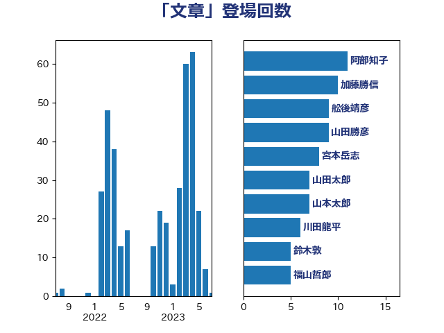

単語「文章」

| 浅野哲 | 国民民主党 | 14 回 |
| 吉田統彦 | 立憲民主党 | 9 回 |
| 梅村聡 | 日本維新の会 | 9 回 |
| 礒崎哲史 | 国民民主党 | 6 回 |
| 大西健介 | 立憲民主党 | 5 回 |
| 小西洋之 | 立憲民主党 | 5 回 |
| 山田勝彦 | 立憲民主党 | 5 回 |
| 塩川鉄也 | 日本共産党 | 4 回 |
| 山田宏 | 自由民主党 | 4 回 |
| 末松信介 | 自由民主党 | 4 回 |
| 杉本和巳 | 日本維新の会 | 4 回 |
| 浅田均 | 日本維新の会 | 4 回 |
| 田村憲久 | 自由民主党 | 4 回 |
| 石垣のりこ | 立憲民主党 | 4 回 |
| 茂木敏充 | 自由民主党 | 4 回 |
| 西村康稔 | 自由民主党 | 4 回 |
| たがや亮 | れいわ新選組 | 3 回 |
| 古川禎久 | 自由民主党 | 3 回 |
| 吉田宣弘 | 公明党 | 3 回 |
| 山崎誠 | 立憲民主党 | 3 回 |
| 斉藤鉄夫 | 公明党 | 3 回 |
| 渡辺周 | 立憲民主党 | 3 回 |
| 石井苗子 | 日本維新の会 | 3 回 |
| 穀田恵二 | 日本共産党 | 3 回 |
| 篠原孝 | 立憲民主党 | 3 回 |
| 西田実仁 | 公明党 | 3 回 |
| 谷公一 | 自由民主党 | 3 回 |
| 遠藤敬 | 日本維新の会 | 3 回 |
| 阿部知子 | 立憲民主党 | 3 回 |
| 階猛 | 立憲民主党 | 3 回 |
| 上田清司 | 国民民主党 | 2 回 |
| 伊藤孝江 | 公明党 | 2 回 |
| 伴野豊 | 立憲民主党 | 2 回 |
| 國場幸之助 | 自由民主党 | 2 回 |
| 城井崇 | 立憲民主党 | 2 回 |
| 大串博志 | 立憲民主党 | 2 回 |
| 大塚耕平 | 国民民主党 | 2 回 |
| 大島敦 | 立憲民主党 | 2 回 |
| 宮本岳志 | 日本共産党 | 2 回 |
| 岸信夫 | 自由民主党 | 2 回 |
| 松沢成文 | 日本維新の会 | 2 回 |
| 森まさこ | 自由民主党 | 2 回 |
| 森田俊和 | 立憲民主党 | 2 回 |
| 武田良太 | 自由民主党 | 2 回 |
| 浜田聡 | NHK党 | 2 回 |
| 田村智子 | 日本共産党 | 2 回 |
| 畦元将吾 | 自由民主党 | 2 回 |
| 福山哲郎 | 立憲民主党 | 2 回 |
| 福島伸享 | 無所属 | 2 回 |
| 福田昭夫 | 立憲民主党 | 2 回 |
| 谷田川元 | 立憲民主党 | 2 回 |
| 野田佳彦 | 立憲民主党 | 2 回 |
| 長妻昭 | 立憲民主党 | 2 回 |
| 高橋千鶴子 | 日本共産党 | 2 回 |
| 黄川田仁志 | 自由民主党 | 2 回 |
| 一谷勇一郎 | 日本維新の会 | 1 回 |
| 上川陽子 | 自由民主党 | 1 回 |
| 中谷一馬 | 立憲民主党 | 1 回 |
| 串田誠一 | 日本維新の会 | 1 回 |
| 丸川珠代 | 自由民主党 | 1 回 |
| 井上信治 | 自由民主党 | 1 回 |
| 井上哲士 | 日本共産党 | 1 回 |
| 井坂信彦 | 立憲民主党 | 1 回 |
| 伊藤岳 | 日本共産党 | 1 回 |
| 前川清成 | 日本維新の会 | 1 回 |
| 加藤勝信 | 自由民主党 | 1 回 |
| 勝部賢志 | 立憲民主党 | 1 回 |
| 北神圭朗 | 無所属 | 1 回 |
| 古賀之士 | 立憲民主党 | 1 回 |
| 吉川元 | 立憲民主党 | 1 回 |
| 和田有一朗 | 日本維新の会 | 1 回 |
| 塩村あやか | 立憲民主党 | 1 回 |
| 守島正 | 日本維新の会 | 1 回 |
| 宮崎政久 | 自由民主党 | 1 回 |
| 宮本徹 | 日本共産党 | 1 回 |
| 寺田学 | 立憲民主党 | 1 回 |
| 小沼巧 | 立憲民主党 | 1 回 |
| 山下芳生 | 日本共産党 | 1 回 |
| 山本剛正 | 日本維新の会 | 1 回 |
| 岸田文雄 | 自由民主党 | 1 回 |
| 岸真紀子 | 立憲民主党 | 1 回 |
| 川合孝典 | 国民民主党 | 1 回 |
| 川崎ひでと | 自由民主党 | 1 回 |
| 木原稔 | 自由民主党 | 1 回 |
| 木村英子 | れいわ新選組 | 1 回 |
| 杉田水脈 | 自由民主党 | 1 回 |
| 松川るい | 自由民主党 | 1 回 |
| 松本尚 | 自由民主党 | 1 回 |
| 林芳正 | 自由民主党 | 1 回 |
| 森山浩行 | 立憲民主党 | 1 回 |
| 泉健太 | 立憲民主党 | 1 回 |
| 片山大介 | 日本維新の会 | 1 回 |
| 盛山正仁 | 自由民主党 | 1 回 |
| 矢倉克夫 | 公明党 | 1 回 |
| 石川博崇 | 公明党 | 1 回 |
| 石川大我 | 立憲民主党 | 1 回 |
| 石田昌宏 | 自由民主党 | 1 回 |
| 福島みずほ | 社会民主党 | 1 回 |
| 空本誠喜 | 日本維新の会 | 1 回 |
| 竹内真二 | 公明党 | 1 回 |
| 米山隆一 | 立憲民主党 | 1 回 |
| 紙智子 | 日本共産党 | 1 回 |
| 緑川貴士 | 立憲民主党 | 1 回 |
| 舟山康江 | 国民民主党 | 1 回 |
| 舩後靖彦 | れいわ新選組 | 1 回 |
| 芳賀道也 | 国民民主党 | 1 回 |
| 衛藤晟一 | 自由民主党 | 1 回 |
| 道下大樹 | 立憲民主党 | 1 回 |
| 野田聖子 | 自由民主党 | 1 回 |
| 門山宏哲 | 自由民主党 | 1 回 |
| 青柳仁士 | 日本維新の会 | 1 回 |
| 麻生太郎 | 自由民主党 | 1 回 |